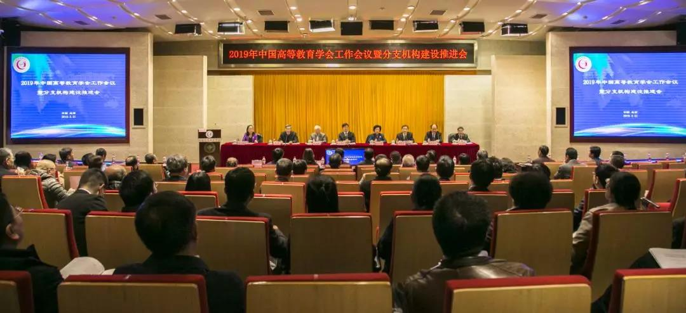

（转载自中国高等教育学会微信公众号）

2019年中国高等教育学会工作会议暨分支机构建设推进会于3月31日在北京召开。会议以习近平新时代中国特色社会主义思想特别是习近平总书记关于教育的重要论述为指导，贯彻落实党的十九大和全国教育大会精神，总结学会2018年工作，对学会2019年的工作进行部署。学会会长、教育部原党组副书记、副部长杜玉波出席会议并讲话。学会副会长刘川生、管培俊、张大良出席会议。学会副会长、秘书长康凯，学会监事会监事长孙维杰分别作年度工作报告和监事会工作报告。学会监事会监事，各省（自治区、直辖市）高等教育学会、有关行业高等教育学会秘书长，分支机构理事长、秘书长、监事长（监事）以及有关大学高等教育学会秘书长等共计220余人参加会议。

杜玉波会长在讲话中指出，新一届理事会立足新时代提出了学会事业长远发展的战略构想，即凝练出了“学术立会、服务兴会、规范办会、创新强会”的办会宗旨；提出了“提升政治站位，把握办会方向；找准职责定位，把握服务面向；推动争先进位，把握工作导向”的总体要求；理清了“建智库、强服务；创品牌、提质量；立规矩、严管理；谋合作、扩影响”的工作思路；明确了“服务高等教育改革发展；服务政府部门宏观决策；服务高等学校办学实践；服务高等教育理论探索”的服务面向；形成了“运用‘新思维’、抓准‘真问题’，探索‘新模式’、做好‘真研究’，开拓‘新境界’、推动‘真创新’，做出‘新贡献’、确保‘真管用’”的研究原则；规划了“始终坚持政治引领；大力加强智库建设；着力办好‘两会一刊’；规范建设分支机构；承接政府职能转移；拓展深化合作交流”的业务布局；总结了“政治上坚持高站位；思路上坚持大格局；事业上坚持谋长远；工作上坚持善作为；作风上坚持严要求”的自身建设基本经验；确立了“建设具有中国特色、国际影响的高等教育现代学术社团”的建设目标。上述八个方面构成了学会办会的根本大纲、总体思路和长远规划。
杜玉波会长指出，分支机构是学会繁荣发展的重要基础。2019年要把加强分支机构建设作为重点工作，从四个方面着手大力实施“中国高等教育学会分支机构质量提升计划”，把“建智库、强服务”作为这个提升计划的根本；把“创品牌、提质量”作为这个提升计划的核心；把“重管理、上水平”作为这个提升计划的重点；把“谋合作、扩影响”作为这个提升计划的方向。监事会和分支机构的监事要围绕学会2019年工作要点发挥更大作用，努力做到“事前重预防、事中全参与、事后善总结”，为各项事业保驾护航。学会要进一步加强自身建设，继续在服务国家发展战略方面发声，在繁荣高等教育学术研究方面献智，在加强对外交流合作方面出招，在推动规范办会和加强分支机构管理方面出手，在围绕中心、服务大局方面尽职。（讲话全文另发）